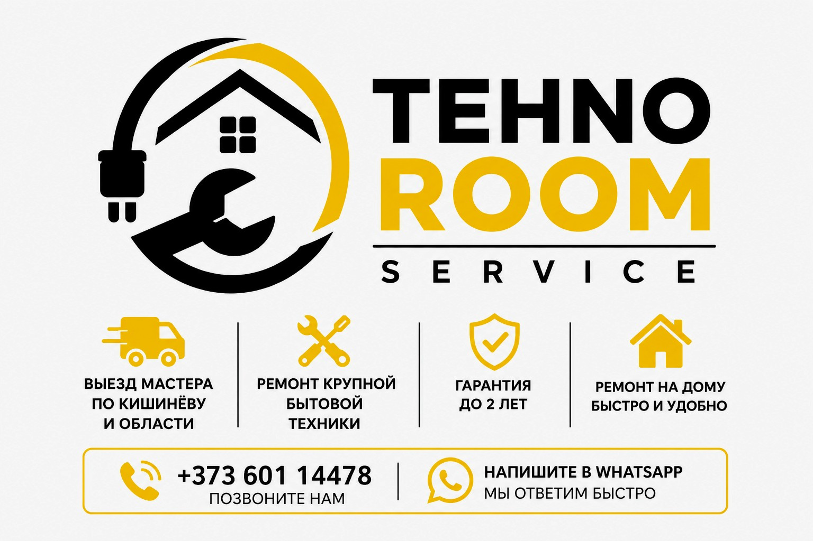

Выезд мастера по Кишинёву и за пределы города
Диагностика и ремонт на дому
Устранение неисправностей
Быстрый профессиональный ремонт
Ремонт электрической техники
✅ Работаем каждый день 09:00–20:00
✅ Опытный мастер
✅ Выезд по Кишинёву и области
✅ Честные цены
✅ Гарантия на работу
1️⃣ Вы звоните
2️⃣ Мы приезжаем
3️⃣ Проводим диагностику
4️⃣ Выполняем ремонт
5️⃣ Вы получаете гарантию
📞 +373 601 14478
📍 Кишинёв и пригород
🕘 Каждый день 09:00–20:00